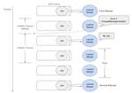
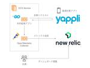

Yappli Tech Blog
https://tech.yappli.io/
株式会社ヤプリの開発メンバーによるブログです。最新の技術情報からチーム・働き方に関するテーマまで、日々の熱い想いを持って発信していきます。
フィード

Laravel Worker x SQSの組み合わせで少しハマったこと 1
1
Yappli Tech Blog
こんにちは！SREグループの三橋です。 普段はNew Relicのことばかり書いている私ですが、本日はLaravel Worker x SQSのお話しをします。 弊社ではちょうどPHPアプリケーションのコンテナ化対応に取り組んでおり、その対応の中でLaravel WorkerとAmazon SQSを使って非同期処理を実装する必要がありました。その際に少しつまづいた部分が2点あったので、その内容についてご紹介します。 ※ 本記事はLaravel 11.x前提で記載しています。バージョンによっては仕様が異なる可能性がありますのでご注意ください。 コンテナ化対応の取り組みの背景については、以前発表し…
2日前

New Relic x OpenTelemetryを使ってサービスの健康状態が一目でわかるダッシュボードを作りました
Yappli Tech Blog
こんにちは、SREグループの三橋です。 今回はNew Relic x OpenTelemetryを使ってサービスの健康状態がわかるダッシュボードを作ったのでそのお話をします。 ※ 主にWhyにフォーカスしており、New RelicやOpenTelemetryなどの技術的な部分についての説明は記載していないのでご注意ください。 想定する読者 New Relicの活用事例についてご興味をお持ちの方 New Relic x OpenTelemetry にご興味をお持ちの方 Yappliの裏側についてご興味をお持ちの方 背景 Yappliはマルチテナント構成をとっており、2024年7月30日現在845…
8日前

Vueで複数表示もドラッグもできる最強のフローティングパネルを作った話
Yappli Tech Blog
複数のフローティングパネルを表示する例フロントエンドエンジニアのゆう（@aose_developer）です。 ヤプリのCMSにはBlock UIという、直感的かつフレキシブルにアプリを制作できる基盤があります。 Yappliの新基盤「Block UI」 のご紹介 個人的にはノーコードツールというだけでかなり楽しい開発ですが、中でもこのBlock UIはより複雑なUIや機能を作ることになるので、フロントエンドエンジニアとしてやりがいを感じています。 そこで今回は、Block UIでの開発を進めていく中で誕生した 卍最強のフローティングパネル卍 *1 について、最強たる所以をご紹介すると共に実装す…
15日前
ヤプリのテックブログ投稿をGitHubを利用してできるようにしました
Yappli Tech Blog
はじめに ヤプリで新卒SREをやっている眞田です。 ヤプリでは、エンジニアが日々業務を遂行する上で学んだ技術をテックブログに公開しています。 ヤプリのテックブログははてなブログ上で管理されていますが、GitHubなどを利用した運用はされていない状態でした。 そこで、GitHubを利用したブログ投稿までの運用フローを構築しました。 本ブログでは、この決断に至った経緯と運用までのフローについて紹介します。 以前までのブログ管理 これまでヤプリでは、テックブログを投稿するフローは以下のようになっていました。 Web上で下書き作成 → Web上で編集 → Web上で下書きを確認し、レビューする → W…
18日前
Cloud Storage トリガーによって呼び出している Go の Cloud Functions 関数を第２世代へ移行する
Yappli Tech Blog
はじめに やること CloudEvent 関数を利用したコードに書き換える Eventarc APIの有効化とロールの付与 デプロイコマンドのオプションを変更する 関数をデプロイする まとめ 参考 はじめに こんにちは、サーバーサイドエンジニアの加味（@kami_tsukai）です。弊社には、CloudStorage のファイナライズをトリガーとして、受け取った情報を処理し、Pub/Sub にパブリッシュする Cloud Functions 関数があります。その関数のGoバージョンを1.19から1.22に上げる際に第２世代の対応が必要になりました。 第2世代では、Go における CloudEv…
19日前
Classmethod Odysseyで登壇してきました
Yappli Tech Blog
こんにちは！ New Relic大好きSREグループの三橋です!! 先日行われたクラスメソッド様の20周年イベントClassmethod Odysseyに招待いただき、登壇してまいりましたので、そのご紹介です。 classmethod.jp 発表内容 こちらが当日の登壇資料になります speakerdeck.com Yappliは弊社のビジネスを支えるコアプロダクトであり、長い年月をかけて機能拡張が行われてきました。2024年1月現在800以上ものアプリがYappli上で動いており年々システムの複雑度も上がってきています。 今回の発表では複雑化したYappliにおいて、どのようにしてレガシーシ…
22日前
dbt-osmosisを導入してdbt docsのdescriptionの拡充率を30%→80%まで上げた話
Yappli Tech Blog
こんにちは！ データサイエンス室の山本（@__Y4M4MOTO__）です。 ヤプリではdbtを用いてデータ基盤を運用しており、dbt docsをデータカタログとして使用しています。 dbt docs整備の話はこちらの資料にて公開しているので、そちらをご覧いただけましたら幸いです。 speakerdeck.com ヤプリのdbt基盤には主にアプリユーザーの行動ログやアプリプラットフォーム「Yappli」のサービスDBのデータが入っています。これらのデータをSource, Staging, Component, Martの4つの層で加工しています。当時、dbt docsのdescriptionが埋…
24日前
Nuxt3で@sentry/vueを使うとエラー発生時に500エラーが表示される時がある
Yappli Tech Blog
フロントエンドエンジニアのこん(@k0n_karin)です！今回はNuxt3でSentryを扱ったときに遭遇した事象について投稿します。 ※NuxtとSentryそのものの説明は割愛します。 ※本記事執筆時点のバージョンは以下のとおりです。 nuxt: 3.12.2 @sentry/vue: 8.13.0 解決策 先に解決策です。事象の解説も見たい方は次の章以降を参考にしてください。 Nuxt3で@sentry/vueを使う際、エラー発生時に500エラーの画面を表示したくない場合は、Sentry.init()の前にapp.config.errorHandlerに任意の関数を代入しましょう。 （…
1ヶ月前
フロントエンドチーム、勉強会始めました
Yappli Tech Blog
はじめに フロントエンドチームについて 文部科学大臣設立の経緯 現状のフロントエンドチームの課題を知る 第1回勉強会の内容 まとめ はじめに こんにちは。フロントエンドエンジニアの平川です。 今回はヤプリのフロントエンドチームで始めた勉強会の活動についてご紹介します。 技術力向上を目指したこの取り組みを通じて、私たちのチームのことを少しでも知っていただければ幸いです。 フロントエンドチームについて 現在、ヤプリのフロントエンドチームにはマネージャーを含めて7名が所属しています。 メンバーは自身が所属するプロジェクト以外にも、それぞれで役割分担をして日々のフロントエンドの課題解決に取り組んでおり…
1ヶ月前
ヤプリiOSエンジニアの新プライバシー要件対応③ | ノーコードアプリプラットフォームの運用体制も大公開！
Yappli Tech Blog
はじめに こんにちは、ヤプリでiOSエンジニアをしている菅（@Nao_RandD）です。 Appleの新しいプライバシー要件のアップデート に関する記事 「第３弾」 です！ これまでに、２つの記事でそれぞれの読者を対象に、プライバシーマニフェスト1についてや、ヤプリでの取り組みを紹介させていただきました。 第１弾：新しいプライバシー要件がどういったものかと、時系列にそって何があったかを知りたい方に！ tech.yappli.io 第２弾：新しいプライバシー要件にヤプリで取り組んだ内容を大公開、企業がどんな対応をしているか知りたい方に！ tech.yappli.io 最後を飾る第３弾では、ノーコ…
1ヶ月前
サーバサイドエンジニアが中途入社半年で感じたヤプリの魅力
Yappli Tech Blog
こんにちは！サーバーサイドエンジニアの柿本です！ 2023年12月にサーバーサイドエンジニアとして中途入社し、早くも半年が経過しました。 この記事ではその半年で感じたヤプリのことについて、ご紹介できればと思います。 ヤプリに興味を持ってくださっている方、入社後に馴染めるか不安の方、ヤプリのエンジニア組織に興味のある方に少しでもヤプリの雰囲気が伝われば幸いです。 入社してからやったこと YOP（オンボーディング） デモアプリの作成 役員の方とランチ 各部署についての研修 開発タスク（機能改修・バグ修正など） インシデント対応・調査 ヤプリでは特にオンボーディングを丁寧に行っている印象がありました…
1ヶ月前
画面回転でLazyVGridのカラム数を変更する
Yappli Tech Blog
こんにちは、iOSエンジニアの西村です。 今回は、SwiftUIのLazyVGridを使って画面回転に応じてカラム数を変更する処理を実装したいと思います。 縦画面（2列での表示） 横画面（4列での表示） LazyVGridで絵文字を表示する まずは、LazyVGridを使用してUnicodeと絵文字をそれぞれ2列で表示してみました。 コードは、LazyVGridのドキュメントにサンプルとして掲載されているものをそのまま使用しています。 developer.apple.com このコード内でカラム数を定義しているのは、2行目のcolumns変数です。この変数でGridItemの数を増やすと、それ…
1ヶ月前
Kotlin Fest 2024で登壇してきました
Yappli Tech Blog
こんにちは、Androidチームに所属しているにゃふんた（nyafunta9858）です。 2024年6月22日にベルサール渋谷ファーストで開催されたKotlin Fest 2024で「KotlinのLinterまなびなおし2024」というタイトルで登壇してきましたので、その参加レポートとなります。 www.kotlinfest.dev Kotlin Festは「Kotlinを愛でる」をテーマにしたテックカンファレンスで、今年は実に5年ぶりとなる念願のオフラインでの開催となりました。前回のKotlin Fest 2022に続いて2回目の登壇だったのですが、初めてのオフラインでの登壇だったことも…
1ヶ月前
CircleCIを並列化してCIの実行時間を半分以下に改善した話
Yappli Tech Blog
はじめに こんにちは。サーバーサイドエンジニアの佐野きよ(@Kiyo_Karl2)です。 ヤプリではコード品質維持のため、CI(継続的インテグレーション)を取り入れており、GitHubへのプッシュをトリガーに自動テストや構文/フォーマットチェックなどが実行されます。 しかし、サービスの成長に伴いソースコードの総量はどんどん増えていきます。すると、CIの実行時間がどんどん長くなっていきます。これはどんなサービスでも避けられない問題かと思います。 CIによるチェックをすべてパスしないとPRをマージできないような運用としている場合、CIの実行時間が長くなることは開発生産性にダイレクトに影響してきます…
1ヶ月前
UICollectionViewでサムネイルスライダーを実装する
Yappli Tech Blog
こんにちは、iOSエンジニアの西村です。 iPhoneの写真アプリには目的の写真を見つけやすくするため、画面下部にサムネイル形式のスライダーが実装されています。最近撮った写真を見返すときに便利なので意外と嬉しい機能の一つです。 今回は、このようなサムネイルスライダーをUIKitで実装する方法をご紹介します。 ※ 画面下部には写真のサムネイルが横並びに一覧表示され、現在表示されている画像が中央に配置されています 実装する機能 実装 1. 横並びのリストを作成する 2. 画面中央からサムネイルを表示する 3. スクロールしてもサムネイルが画面中央でピッタリ止まるようにする 4. サムネイルが画面中…
1ヶ月前
Goのgo-playground/validateパッケージを理解する
Yappli Tech Blog
はじめに こんにちは、サーバーサイドエンジニアの中川（tkdev0728）です。 最近タイピング中の手首の疲れが気になりパームレストを導入しました。正直言って元々パームレストに対して否定的だったのですが、 ある日手首の位置が落ち着かず半信半疑で導入してみると快適さに気づき、もっと早く使っていればよかったと思っています。 さて、今回はGoでバリデーション処理を行いたく、ヤプリの他の処理でも使われているvalidateパッケージを使おうと思いました。 その際に自分がvalidateパッケージについて詳しくなく、やりたいことを実現するまでにいろいろと調べたりしたので、それらについて書いていこうと思い…
1ヶ月前
厳密モードの記述をチェックするPHPStanの独自拡張を作った話
Yappli Tech Blog
はじめに こんにちは。サーバーサイドエンジニアの佐野きよ(@Kiyo_Karl2)です。 PHPでは、declare(strict_types=1);をファイルの先頭に記述することで厳密な型チェックを有効にすることができます。これにより暗黙の型変換がされなくなり、関数やメソッドの引数および戻り値の型宣言に正確に対応する値のみ受け入れることができるようになるため、より堅牢なコードになります。しかし、この記述はファイルごとに記述しなければいけないため、うっかりこの記述が抜けてしまいコードレビューで同様の指摘が度々ありました。 そこで、コードレビューで人間が指摘するのではなく、PHPStanに指摘し…
1ヶ月前
ヤプリ内定者インターンの世界
Yappli Tech Blog
はじめに 初めまして、ヤプリで2025年新卒サーバーサイドエンジニアとして4月から内定者インターンに参加している大学院修士2年生の籔本と申します。 普段は大学院で深層学習を利用したCGの研究をしています。 この記事では「なぜヤプリを選んだのか」「内定者インターンではどのようなことに取り組むのか」を書いていきます。 ヤプリに興味を持っている方々の参考になれば幸いです。 なぜヤプリを選んだのか ヤプリを選んだ理由はたくさんありますが、その中でも特にヤプリに魅力を感じた点について話したいと思います。 プロダクトのロマン ヤプリのカジュアル面談ではアプリプラットフォーム「Yappli」のデモをしていた…
2ヶ月前
New Relic Streaming methodについて紹介
Yappli Tech Blog
こんにちは、サーバーサイドグループのマネージャーの鬼木です。 弊社ではAPMとしてNew Relicを導入、活用しています。調査時のログ検索やAPMの確認以外にも、追加したapplicationのアラートを作成するなどサーバーサイドエンジニアもNew Relicを活用しています。 今回は、New Relicのアラート作成時に使用するAlert condition内の設定項目である「Streaming method」について紹介します。この設定項目を使用することでより信頼性の高いEvent集計、アラート検知を行うことができますが、正しく理解していないと期待通りのアラート検知ができないこともあるた…
2ヶ月前
プロダクト開発本部LT大会#12を開催しました
Yappli Tech Blog
こんにちは！24卒サーバーサイドエンジニアの大﨑(@BaseKeita_)です！ 先日、ヤプリのプロダクト開発本部にて12回目のLT大会を開催しました！ 運営や当日の進行に関しては22卒のふなちさんや23卒の山本さん、加納さんの新卒入社組で行いました！ プロダクト開発本部LT大会とは!? 発表内容をちょこっとだけ紹介 与論島ヨロンジマに行ってみたくなる話 GPTをなんとなく理解する まとめ プロダクト開発本部LT大会とは!? 5分程度の短いプレゼン（ライトニングトーク）を行う大会です！ プロダクト開発本部の LT 大会は次のレギュレーションで開催されています。 任意参加 発表時間は5分目安 発…
2ヶ月前
Dataflow の Apache Beam SDK for Java アップグレード対応でやったこと
Yappli Tech Blog
はじめに アップグレードするパイプラインの概要 バージョンアップの流れ Maven でのバージョン変更 非推奨APIの置き換え データパイプラインの動作確認 まとめ 最後に はじめに こんにちは、サーバーサイドエンジニアの加味（@kami_tsukai）です。弊社ではデータ集計バッチを Dataflow で構築しているシステムがあります。現在、Dataflow SDK の最新バージョンは2.56.0ですが、前述したシステムは非推奨バージョンの2.34.0で動いており、もちろん非推奨バージョンなので今後のサポートが急に打ち切られることもあります。またバージョン差分が大きくなりすぎるとバージョンア…
2ヶ月前
ヤプリiOSエンジニアの新プライバシー要件対応② | 実際に取り組んだ内容を大公開！
Yappli Tech Blog
はじめに こんにちは、ヤプリでiOSエンジニアをしている菅（@Nao_RandD）です。 前回に続いて、Appleのプライバシー要件アップデートに関する記事第２弾です！ 第１弾ではプライバシー要件のアップデートを時系列に沿って整理しながら、プライバシーマニフェスト1のわかりにくさを解消する対応表を紹介させていただきました。 ご興味ある方は以下のリンクから、ご一読いただけると嬉しいです。 tech.yappli.io プライバシー要件のアップデートがどういったものかと、現状どういったステータスかサクッと確認したい方向けに、折りたたみコンテンツとして記載しておきます💁 プライバシー要件のアップデー…
2ヶ月前
ヤプリのiOSエンジニアに興味をお持ちの方へ
Yappli Tech Blog
ヤプリについて Yappliのアプリ開発の特徴 iOSグループの開発体制について 働き方 人数（2024年5月31日時点） コミュニケーション機会 技術スタック メンバーの役割分担 プロジェクトチーム 遊撃チーム 共通業務（チーム全員で対応） 現状の課題感や今後の方針 継続的な学習とスキルアップの支援 最後に この記事はヤプリのiOSエンジニア職にご興味をお持ちの方向けに、参考になりそうな情報をまとめております。 ヤプリについて 弊社ヤプリはノーコードでモバイルアプリの開発、運用、分析をクラウドからワンストップで提供するプラットフォーム「Yappli」を提供しています。 ヤプリのミッションは「…
2ヶ月前
dbt Core で GCP の出力先プロジェクトと課金プロジェクトを分ける
Yappli Tech Blog
こんにちは！データサイエンスグループの山本です（ @__Y4M4MOTO__ ）です。 BigQuery に対して dbt Core を利用している場合、 profiles.yml の project: （ target variables の target.project ）に設定した GC プロジェクトが dbt run した際のdbtモデルの出力先となる GC プロジェクトであり、かつ課金される GC プロジェクトとなります。 しかし、状況によっては、モデル出力先の GC プロジェクトと課金される GC プロジェクトを分けたいこともあります（例: BigQuery を定額料金で運用してい…
2ヶ月前
ヤプリiOSエンジニアの新プライバシー要件対応① | 時系列で振り返り、関連用語を理解する
Yappli Tech Blog
はじめに こんにちは、ヤプリでiOSエンジニアをしている菅（@Nao_RandD）です。 みなさん、新しいプライバシー要件への対応は順調でしょうか？ 👀 「プライバシーマニフェスト」1とか、「SDKの署名」でお馴染みのアレですね。 2024年5月1日からApp Storeへの提出にプライバシー要件のアップデートが適用されています。 developer.apple.com つまり、記事を書いている現時点（2024年6月）で、必要な対応がされていない場合にはストア申請でリジェクトされる可能性があります。 本記事から複数の記事に渡って、ヤプリで新しいプライバシー要件に対応した内容をご紹介させていただ…
2ヶ月前
GoでJSONから値を探索する時にgojqが便利だった
Yappli Tech Blog
はじめに こんにちは、サーバーサイドエンジニアの中川（@tkdev0728）です。 JSONから特定のキーを使って値を抽出するというユースケースは珍しくないと思います。言語やツールによっていくつかやり方は変わると思うのですが、 今回はリクエスト先と抽出用のキーが動的に変わるのでさまざまなパターンが想定されていました。 Goで抽出を行いたく、探索ロジックを自前で実装しなきゃいけないかなと思ったのですが調べてみるとgojqというライブラリがあることを知り使ってみました。 めちゃくちゃ便利だと思ったので今回はgojqについて紹介してみようと思います。 gojqとは リポジトリはこちら github.…
2ヶ月前
#TROCCOUG にて「データカタログの最初の一歩 〜データ組織向けに dbt docs を整備している話〜」について話しました
Yappli Tech Blog
こんにちは！データサイエンスグループの山本です（ @__Y4M4MOTO__ ）です。 先日、 TROCCO のユーザ会「 #TROCCOUG 」にて、「データカタログの最初の一歩 〜データ組織向けに dbt docs を整備している話〜」というタイトルで発表させていただきました。 この記事では、そのときの発表資料を公開しています。 発表資料 speakerdeck.com 発表概要 弊社のデータサイエンスグループ内向けに dbt docs を整備している話です。 これまで社内にデータサイエンティストは1人しかいませんでしたが、2023年に3人に増え、グループ体制が始動しました。グループ体制に…
2ヶ月前
Universal Analytics（UA）を脱却し、流入数測定のためのデータ収集基盤を構築しました
Yappli Tech Blog
はじめに GA4の利用検討 UAで出力されていた中から必要なデータを洗い出す 新収集基盤のシステム設計と構築 新旧収集基盤を並行稼働させ、差分検証を実施 今後に向けて 最後に はじめに こんにちは、サーバーサイドエンジニアの加味（@kami_tsukai）です。 弊社には、iOS もしくはAndroid 端末からそれぞれの任意のアプリの起動、または任意のウェブページ（アプリダウンロードページなど）へ転送するためのQRコード（URL）を生成するWebシステムが存在しています。例えば、店舗でQRコードを設置して、お客様にアプリのダウンロードを促す施策などで活用されています。そして、そのWebシステ…
2ヶ月前
27卒Androidエンジニアがヤプリのインターンに行ってきた
Yappli Tech Blog
導入 こんにちは！ヤプリで1ヶ月間、Androidエンジニアとして就業型インターンシップに参加させていただきました、中平陽菜と申します。 普段は「ひなりん」というハンドルネームで活動しています。 React NativeやFlutterを経て、現在はAndroidネイティブのエンジニアです。 インターンシップを終えるにあたり、期間中の過ごし方やインターン生から見たヤプリについて、ありのまま書こうと思います🙌✨ インターンシップに参加した背景 ヤプリとの出会いは、TechTrain主催の逆求人イベントでした。ここでお話したのが、選考やインターン期間を通してお世話になることになる人事の門馬さんでし…
2ヶ月前
Zapierを使ってサクッとチームのアラート対応を集計できるようにしてみた
Yappli Tech Blog
こんにちは、サーバチームの尾宇江です。 今回は、Zapierで「チームのアラート対応集計」を自動化してみました。Zapierは機能が充実しているので思いついてから30分くらいで集計できる状態になりました。 これまでの運用 と やりたかったこと これまでの運用 サービスのアラートが通知されるSlackチャンネルがある 通知に気づいたチームメンバーがアラートの内容を調査する 発生頻度や対応頻度は数値化して把握できていなかった やりたかったこと アラートの発生頻度を可視化したい アラート対応頻度の偏りを可視化したい ※ 誰かが特定のアラート見ているなら、ナレッジ共有して誰でもアラート対応できるように…
2ヶ月前